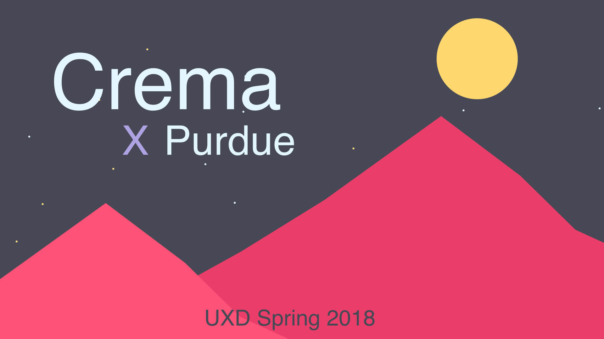
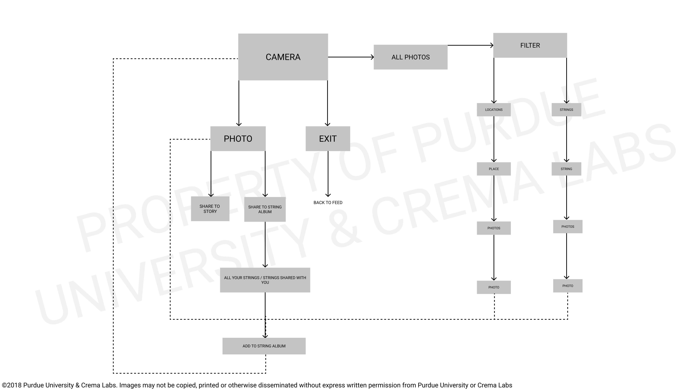

String Application
Project Duration:
Jan 2018 - May 2018
Team Members:
- Elizabeth Finley (Co-Lead)
- Nick Wong (Co-Lead)
- John Paul Oses (Co-Lead)
- Hayley Farmer
- Leo Qu
- Juliet Jimenez
- Hunter Hollinger
Personal Contributions:
- Task Flow
- Wireframing
- Design System
- Prototyping
Project Summary:
Crema Labs is a Digital Product Agency located in Kansas City, MO. They were working on an app in its early phase of development named String. String is a conceptual mobile platform for people to explore a "string" of curated experiences in cities around the world and to share their inside stories to the great locations in their communities. Crema gave us the task of delivering customer research insights that provide new ideas, thoughts and perspectives about the design of this app as well as visualizing design recommendations based on findings.
Our Approach:

Research Overview
In order to successfully know our audience and their habits when using apps like Yelp and TripAdvisor, we dove into both Primary and Secondary research.
Research Methods:
- A survey, which focused on gathering user information, their familiarity with ratings and recommendation applications, and the frequency in which they use these apps. The survey was developed through Qualtrics and distributed using social media.
- Interviews, which were based around our findings of our survey and were more targeted towards the relationship our users have with rating and recommendation apps.
- Literature Review, which allowed us to compare and contrast our findings from both the survey and interviews with previous research that had already been done.
Takeaways

User Profiles
Our research methods ultimately led to the creation of these User Profiles, a way for us to understand and classify our users to help us design for them specifically.
Ideation Overview
Using the data and resources we found during our research, as well as our User Profiles, we began to ideate what String could possibly look like. To do this to the best of our abilities, we proceeded in a unique pattern, which allowed us to ideate individually, as well as a group. We began with Task flows. This allowed us to think of all the possible tasks, actions, and pages necessary to make String work. Moving forward with our flow in mind, we were able to ideate fairly quickly, using a converge-diverge ideation pattern, while maintaining a high level of quality. Our sketches quickly became wireframes, and moving from our second round of ideation, we only focused on the features that absolutely had to be there.
Task Flows
There are two kinds of flows that can be done within UX: User flows and Task flows. A task flow is a single flow completed similarly by all users for a specific action. A user flow is the path a user follows through an application. For our purposes, and less confusion, we’ve decided to call what we’ve done “task flows.” This is because they combine the user flow and task flow together to help understand the overall flow we imagined for String. Mapping this out allowed us to eliminate all the unnecessary clutter from our vision and focus on what could really set String apart from its competitors.
Overall App Flow
This is an overall view of String. The foundation for movement within the app is all based on gesture usage, and our goal here was to move with the future as technology moves away from physical buttons to a buttonless future. Our app is still easy to navigate, and any user confusion should be alleviated through our onboarding process.
On-boarding Flow
This is the onboarding flow we proposed first-time users would experience. As they go through their account setup and initial preferences, they can input their interests and people they would like to follow. After the setup, users would go to their own profile page start the other interactions within the app.
Gestures

These are four major interactions we proposed that users can do in order to access the main pages of String. And all of them can be achieved through finger gestures to follow the trend of buttonless interaction from the iPhone X. As we designed String for the future, these interactions would be the standard.
Profile Page Flow
The profile page of String is a users home base. From here, if you are looking at your own profile page, you can see your past Strings, best friends,and favorite locations to visit on Strings as well as some of your favorite cities. When looking at other users’ profiles, you will see much of the same.
Camera Page Flow
The camera feature of our app is very basic and easy to understand. Our research showed that one of the most important aspects of almost any app in general are the pictures featured on a page. Users like to have lots of pics available to look at, and having a camera within our app allows them to directly add pics to their Strings without leaving the app.
Explore Page Flow
The Explore page is used fundamentally to search for new things to do and experience. This means that users will have a list of places and events generated on their interests within the app as well as their places visited in past Strings. When looking for inspiration, this would be a user’s number one stop.
Feed Page Flow
The Feed of String will be the most social and interactive section of the app. Users would see on this screen the Strings of their friends and favorite celebrities and influencers. Users can also comment and like other Strings, and save them for later use as well. This page is the backbone of the social aspect of our app.
String Page Flow
This is the task flow for creating a String. This is the basic flow with which a user would create their schedule for the night. You can search for different places to go and things to do, and add them to your String from this page. The search can also be filtered, and users also have the option to invite friends to Strings as well.
Sketches
To begin our sketching phase of design for each interface, our team did a diverge/converge exercise. We executed this exercise by setting a timer for about 10 minutes and then team members would sketch solo during that time, making rough layout sketches of any and all ideas they had for interfaces. Then, the team would and discuss the sketches, noting repeating themes and similarities across the solo sketches.
Then, outside of class and over the weekends team members would create more detailed solo sketches with more specific details on the interface, keeping in mind the discussion the team had over the rough sketches in class. These sketches would be brought into class and discussed as a team, yet again noting repeating themes and similarities across the sketches as a whole.
Finally, the team would come together at a large whiteboard and form a rough skeleton of what we wanted the interface layout to look like, using common themes we found in the solo sketches as well as any new ideas that the group came up with during their discussions.

Wireframes
Testing Overview
Instead of using the wireframes we made, we created paper mockups for testing. This is because when users are facing a well-made digital mockup, they may be hesitant to give impactful and helpful suggestions toward our product as they may think the product is already in its final form. So in order to properly test our idea, we created these paper mockups for testing. We had three criteria we were assessing in our testing: Pain points, Familiarity, and Layout.


Design System
High Fidelity Mockups